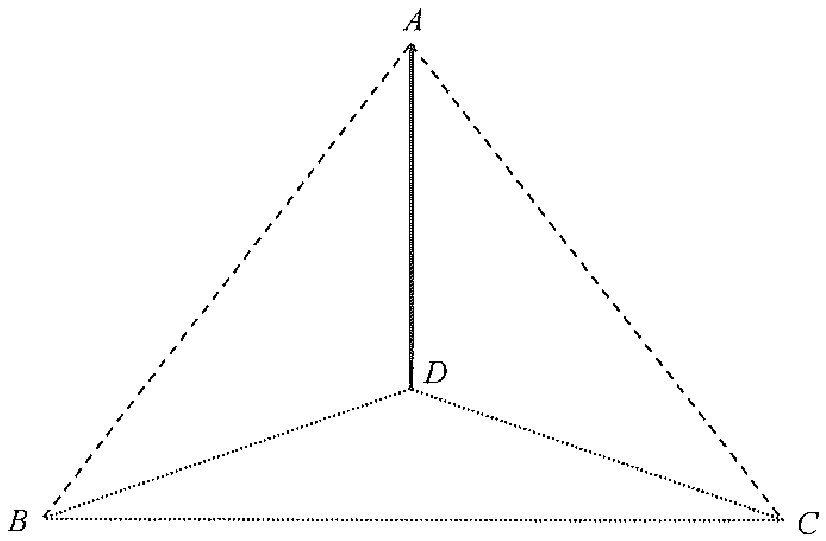

In the figure, \(AD\) is a vertical pole standing on the horizontal ground \(BCD\). If \(AB = 25\text{ m}\), \(AD = 15\text{ m}\), \(BC = 29\text{ m}\) and \(CD = 21\text{ m}\), find the angle between \(AB\) and the plane \(ACD\) correct to the nearest degree.

The angle between a line and a plane is measured between the line and its projection on the plane.
Drop a perpendicular from \(B\) onto the plane \(ACD\); call the foot \(D\). We first justify why the foot is \(D\) in Step 3 — for now we need the length \(BD\).
Hint: look for a right-angled triangle using the vertical pole \(AD\).
Since \(AD\) is vertical, \(AD \perp BD\) (the ground is horizontal), so \(\triangle ABD\) is right-angled at \(D\).
\[BD=\sqrt{AB^{2}-AD^{2}}=\sqrt{25^{2}-15^{2}}=\sqrt{625-225}=\sqrt{400}=20\text{ m}\]
Check the triangle \(BCD\) with \(BD=20,\;CD=21,\;BC=29\):
\[BD^{2}+CD^{2}=20^{2}+21^{2}=400+441=841=29^{2}=BC^{2}\]
By the converse of the Pythagoras Theorem, \(\angle BDC = 90^{\circ}\), i.e. \(BD \perp CD\).
Also \(BD \perp AD\) (Step 2). Since \(AD\) and \(CD\) lie in the plane \(ACD\) and intersect at \(D\), \(BD\) is perpendicular to the whole plane \(ACD\). Hence \(D\) is the projection of \(B\) on the plane \(ACD\).
The projection of \(AB\) onto the plane \(ACD\) is the segment \(AD\). Therefore the angle between \(AB\) and the plane \(ACD\) is
\[\angle BAD\]
Hint: in the right-angled \(\triangle ABD\), \(\angle BAD\) is at the top vertex \(A\).
In right-angled \(\triangle ABD\) (right angle at \(D\)):
\[\cos\angle BAD=\frac{AD}{AB}=\frac{15}{25}=\frac{3}{5}=0.6\]
\[\angle BAD=\cos^{-1}(0.6)\approx 53.1301^{\circ}\]
Correct to the nearest degree: \(\angle BAD \approx 53^{\circ}\).
The angle between \(AB\) and the plane \(ACD\) is approximately \(53^{\circ}\), so the answer is A.
Question. In the figure, \(AD\) is a vertical pole of height \(20\text{ m}\) standing on horizontal ground. \(B\) and \(C\) are points on the ground such that \(AB=29\text{ m}\), \(CD=20\text{ m}\) and \(BC=29\text{ m}\). (a) Find \(BD\). (b) Show that \(BD\) is perpendicular to the plane \(ACD\). (c) Find the angle between \(AB\) and the plane \(ACD\), correct to the nearest degree.